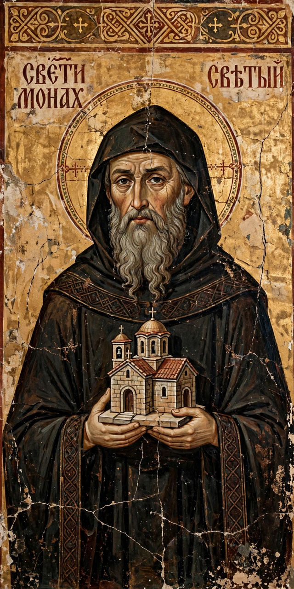

| Born | Rastko Nemanjić, 1174, Gradina, Serbia |
|---|---|
| Died | 14 January 1236, Tarnovo, Bulgarian Empire |
| Venerated in | Eastern Orthodox Church |
| Feast | 27 January (14 January O.S.) |
| Patronage | Serbia, Serbs, education |
Saint Sava (Serbian: Свети Сава; 1174 – 14 January 1236), known as the Enlightener, was a Serbian prince and Orthodox monk, the first Archbishop of the autocephalous Serbian Church, the founder of Serbian law and literature, and a diplomat. Born as Rastko Nemanjić, he was the youngest son of Stefan Nemanja, founder of the Nemanjić dynasty, and ruled the appanage of Zachlumia briefly in 1190–92.
At about the age of seventeen, Rastko fled the court to Mount Athos, where he was tonsured a monk with the name Sava. His father later abdicated and joined him as the monk Simeon; together they refounded the ruined monastery of Hilandar, which became the centre of Serbian religious culture.
Sava returned to Serbia in 1207–08, bringing his father's relics and reconciling his quarrelling brothers Stefan and Vukan. As archimandrite of Studenica Monastery he promoted education, monastic discipline and the building of churches.
In 1219, at Nicaea, Sava was consecrated by Patriarch Manuel I as the first archbishop of the newly autocephalous Serbian Church, with its seat at Žiča Monastery. He crowned his brother Stefan as king and organised the church's dioceses. His Zakonopravilo (Nomocanon, 1219) was the first Serbian legal code, combining Byzantine canon and civil law.
Sava made two pilgrimages to the Holy Land, founding monasteries and purchasing relics, and travelled on diplomatic missions for the church. Returning from his second pilgrimage, he died at Tarnovo in Bulgaria in 1236. His relics were translated to Mileševa Monastery; in 1594, during the Ottoman period, Sinan Pasha had them burned publicly in Belgrade, an act intended to crush Serbian morale. The monumental Church of Saint Sava in Belgrade now stands on the presumed site of the burning.
Sava is the patron saint of Serbia and of Serbs, and of education; Savindan (27 January) is celebrated as the patron day of schools. His feast is among the most widely celebrated family patron-saint days (slava) in Serbia.